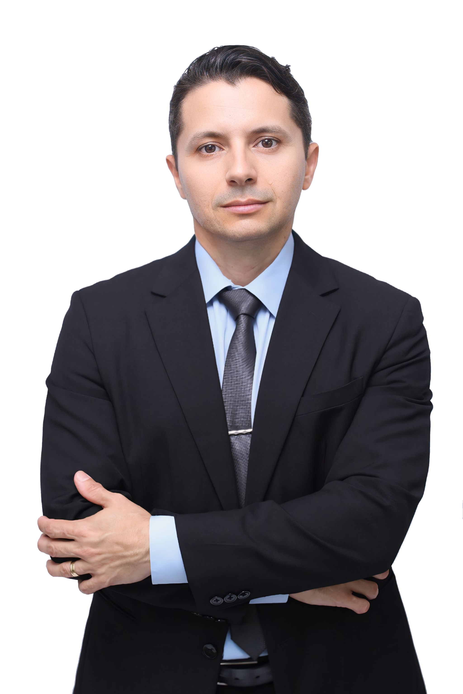
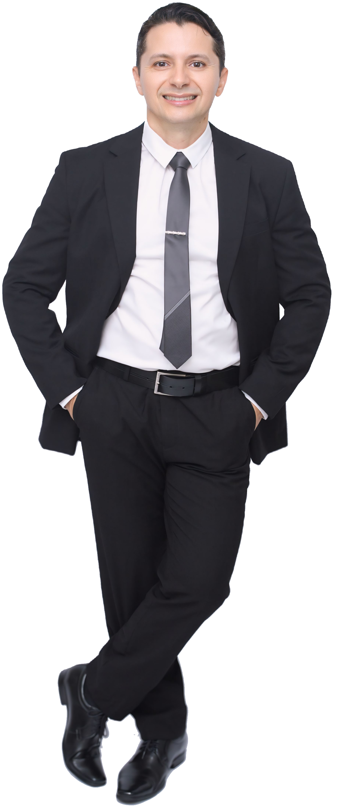

Sobre Mim

Roberlânio Moura Cândido – Advogado | OAB-PB 33022 Formado pela Universidade Federal da Paraíba – UFPB
Minha trajetória até a advocacia é marcada por resiliência, dedicação e escolhas conscientes. Antes mesmo de ingressar na área jurídica, trilhei caminhos sólidos na Gestão Empresarial, tendo concluído minha primeira graduação e uma especialização em Gestão Pública pelo IFPB. No entanto, as oportunidades que a vida nos apresenta não surgem por acaso – e foi justamente seguindo uma dessas oportunidades que iniciei minha formação em Direito pela Universidade Federal da Paraíba (UFPB).
Confesso que o início foi desafiador. Os conteúdos jurídicos não despertaram de imediato minha identificação. Mas, com o tempo, essa relação evoluiu, e nasceu em mim uma verdadeira vocação para a defesa da justiça e dos direitos fundamentais. Durante essa fase acadêmica, conciliava os estudos com a administração de um pequeno restaurante de comida chinesa, que fundei ao lado da minha esposa. A rotina era intensa, exigindo um equilíbrio constante entre família, negócios e universidade.
Foi então que, em um gesto de extrema generosidade e parceria, minha esposa decidiu assumir sozinha o comando do restaurante. Essa atitude foi determinante para que eu pudesse me dedicar integralmente ao último ano da graduação, enfrentando com foco e determinação todas as etapas: o TCC, as atividades complementares, os estágios, audiências, congressos e, claro, o tão temido – e esperado – Exame da OAB. Com muita luta e, acima de tudo, fé em Deus e no apoio incondicional da minha família, fui aprovado.
Hoje, com orgulho e compromisso, atuo como advogado e integro algumas comissões na OAB-PB, tais como a Comissão da Jovem Advocacia (CJA), e a Comissão de Direito Previdenciário (CDPREV) , assim como já fui membro da Comissão de Direito do Consumidor (CODECON). Essas experiências têm sido fundamentais para meu crescimento profissional e para a ampliação do impacto social da advocacia.
Exerço a advocacia com um propósito claro: defender os direitos dos cidadãos, zelando pela legalidade, pela justiça e, acima de tudo, pela dignidade da pessoa humana. Atuo guiado por princípios éticos inegociáveis, como responsabilidade, comprometimento, excelência técnica e sensibilidade humana.
Porque mais do que um ofício, advogar é ser voz. É ser ponte. É ser instrumento de transformação social.
